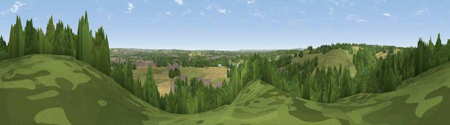

Viewpoint near Tatenhill
#29468 in England · top 49% of its area beats it · near TatenhillThe view, rendered

A 360° render of this exact spot computed from the terrain model, tree cover and land cover — summer colours, afternoon light, calibrated against photographs of famous viewpoints. Real trees, hedges and buildings will differ in detail.
The panorama
Grey silhouette: terrain skyline in each direction (720 bearings, Earth curvature and refraction included). Dashed green: skyline with trees (+15 m) and buildings (+8 m) as obstacles. Blue strip: how far the ground is visible on each bearing.
Where the view opens
Wedge length = distance to the farthest visible ground on that bearing (vegetation-aware). Rings at 10, 25 and 50 km.
What fills the view
43% woodland · 35% grassland · 12% cropland · 8% built-up · 2% water ·
Angular shares of the visible panorama (visual magnitude), not map area. Landscape diversity 0.56 (0–1 Shannon).
Key numbers
More beautiful places nearby
The staircase of upgrades: each row has a higher view potential than everything closer. Driving times are estimates from straight-line distance, calibrated against real road routing — check an actual route before setting out.
| Place | Direction | Drive | Score |
|---|---|---|---|
| Viewpoint near Tatenhill | ENE · 1 km | ~2 min | 46.8 |
| Viewpoint near Burton upon Trent | E · 5 km | ~11 min | 50.6 |
| Viewpoint near Burton upon Trent | E · 6 km | ~12 min | 53.4 |
| Viewpoint near Hanbury | NNW · 6 km | ~14 min | 54.1 |
| Viewpoint near Newton Solney | ENE · 7 km | ~14 min | 55.0 |
| Viewpoint near Hartshorne | E · 13 km | ~24 min | 59.5 |
| Wimblebury Hill | WSW · 21 km | ~36 min | 62.0 |
| Viewpoint near Whitwick | ESE · 24 km | ~39 min | 63.6 |
52.79764, -1.69110 · source: screening · position refined by local search. Computed location — check access rights before visiting.